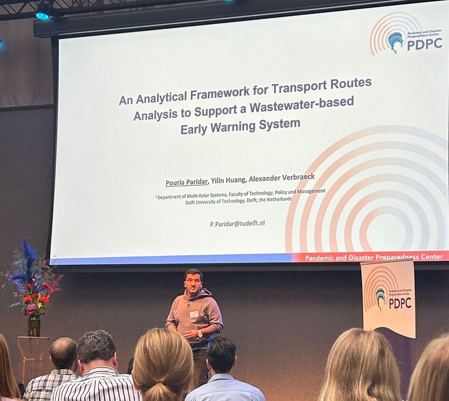

I’m a PhD candidate at TU Delft working on transport simulation of disease spread, based at the Pandemic and Disaster Preparedness Centre. My background is in industrial and systems engineering and policy research, and the through-line across all of it is systems modelling: building things that make a complicated, badly-observed system legible enough to act on.
Most of my current work asks a version of the same question — if a pathogen is moving through the world’s airports and seaports, where would you have to be looking to notice in time? That turns into data pipelines stitching aviation, maritime, demographic and epidemiological sources together; System Dynamics, agent-based and network models on top of them; and risk-ranking frameworks that put flights, vessels and routes in an order someone can actually act on. The constraint I care about most is deployability: sparse data, noisy streams, regulatory requirements, and a decision-maker who needs to know why the model said what it said.
I work with Amsterdam Airport Schiphol and the Port of Rotterdam, and I spend a good share of my time translating model output into policy briefs and stakeholder workshops. Outside that: cycling, coffee, long walks, museums.
Experience
-
Sep 2023 — present
PhD Candidate
Delft University of Technology — Pandemic and Disaster Preparedness Centre
INSPECT project, Frontrunner 5.
- Lead the design of end-to-end data pipelines integrating aviation, maritime, demographic and epidemiological datasets to support early-warning systems for transport hubs.
- Build simulation-driven analytics combining System Dynamics, agent-based models and network analysis to assess operational risk across international transport networks.
- Develop risk-ranking frameworks that prioritise flights, vessels and routes under uncertainty, feeding surveillance and operational decisions.
- Work within real operational constraints — data gaps, noisy streams, regulatory requirements — so that models stay deployable, explainable and auditable.
- Supervise seven bachelor's and master's projects delivering applied analytics for Amsterdam Airport Schiphol and the Port of Rotterdam.
- Translate technical output into executive-level insight, policy briefs and stakeholder workshops with public authorities and infrastructure operators.
-
Nov 2022 — Sep 2023
Research Fellow
University College London — Institute for Environmental Design and Engineering
- Designed data-driven decision tools for urban infrastructure and water systems.
- Led stakeholder-facing analytics used in policy and investment discussions.
- Coordinated data, modelling and reporting workflows across projects.
-
2019 — 2021
Freelance Consultant
Systems modelling and operations — remote and Tehran
Independent consulting for clients in energy services and crisis-era manufacturing, including Royax s.r.o and Taba Engineering and Service Co.
- Designed analytics pipelines and demand–capacity systems models that shaped production planning and supply resilience through the COVID-19 disruption.
- Moved an engineering services firm from traditional goal-setting to OKRs, and trained staff in OKRs and systems thinking.
- Established a data recording and documentation system under ISO 9001:2015.
- Evaluated new business lines and startups for investment alongside R&D and organisational development teams.
-
2019 — 2020
Co-Founder
Hamboodgah — part-time
A crowdfunding platform and social network for local book publishing.
- Set up the crowdfunding system with a focus on organisational selling.
- Developed process maps and a documentation system centred on information flows.
- Improved the sales system, hitting twice the first-quarter sales target.
Education
-
2021 — 2022
MSc in Policy Research
University of Bristol
Dissertation: a scoping review of non-machine-learning simulation models addressing prevalence, interventions and policy implications through the COVID-19 pandemic internationally.
- Quantitative methods: experimental and cross-sectional design, longitudinal studies, ANOVA, regression, PCA, non-parametric tests (SPSS, R).
- Qualitative methods: interviewing, focus groups, observation, systematic review (NVivo, Covidence).
- Policy: policy analysis in complex environments, evidence and policymaking, cost-benefit analysis, implementation; global health policy and governance.
-
2012 — 2017
BEng in Industrial Engineering
Islamic Azad University, North Tehran Branch
GPA 16.06/20 — First Class Honours.
- Operations research, stochastic models and queueing theory, statistical quality control, production planning and inventory control, facilities planning, simulation fundamentals, engineering economics.
Supervision
-
2026
Tracing pathogens through airport wastewater sampling
MSc thesis — TU Delft
Designing airport wastewater sampling networks for infectious disease detection through a mixed-integer optimisation model.
-
2024
Prioritising wastewater sampling in the Port of Rotterdam
BSc project — TU Delft
A data-driven approach to disease detection and prevention.
-
2024
Gastrointestinal illness on cruise ships
BSc project — TU Delft
A risk analysis for the Port of Rotterdam.
-
2024
Simulating COVID-19 on cruise ships
BSc project — TU Delft
Agent-based simulation of the α variant on the voyage from Sydney to Rotterdam.
-
2024
Disease spread at Schiphol Airport
BSc project — TU Delft
A behavioural model of transmission within the terminal.
-
2024
Disease detection at Schiphol
BSc project — TU Delft
How flight origin influences the chance of a passenger importing a harmful illness into the Netherlands.
-
2024
The role of transport hubs in worldwide disease spread
BSc project — TU Delft
Talks
-
Jul 2026
Modelling travel-capable infectious population for a transport-based early warning system
International System Dynamics Conference — Delft, 20–24 July 2026
-
Nov 2025
Early warning analysis of infectious disease spread under sparse data: an open exploration with DMDU
Decision Making Under Deep Uncertainty Society Annual Meeting — London, 17–20 November 2025
-
Oct 2025
An analytical framework for transport route analysis to support a wastewater-based early warning system
3rd Pandemic and Disaster Preparedness Centre Conference — Rotterdam, 3 October 2025

Presenting at the 3rd PDPC Conference, Rotterdam.
{kind=link}
Skills
- Modelling
- System Dynamics, agent-based modelling, network analysis, simulation, risk analysis
- Research
- Quantitative and qualitative methods, systematic review, participatory research, policy analysis
- Tools
- Python, R, SPSS, NVivo, Covidence, Vensim
- Also
- Systems thinking, academic writing, team leadership, stakeholder communication
- Languages
- English (fluent), Persian (native), Turkish (intermediate), Dutch (beginner)
Service
-
2024
Co-organiser, Policy Analysis Colloquium
TU Delft
-
2022, 2023
Reviewer, International System Dynamics Conference
System Dynamics Society — Frankfurt and Chicago
Recent writing
-
28 Jul 2026
Starting a blog
A short note on why this exists and what I plan to put here.